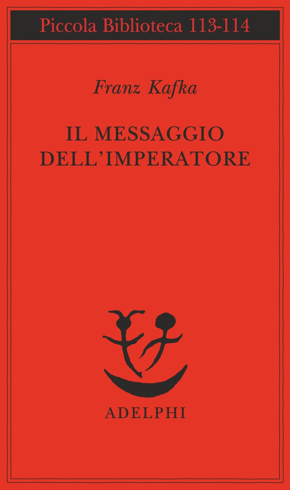
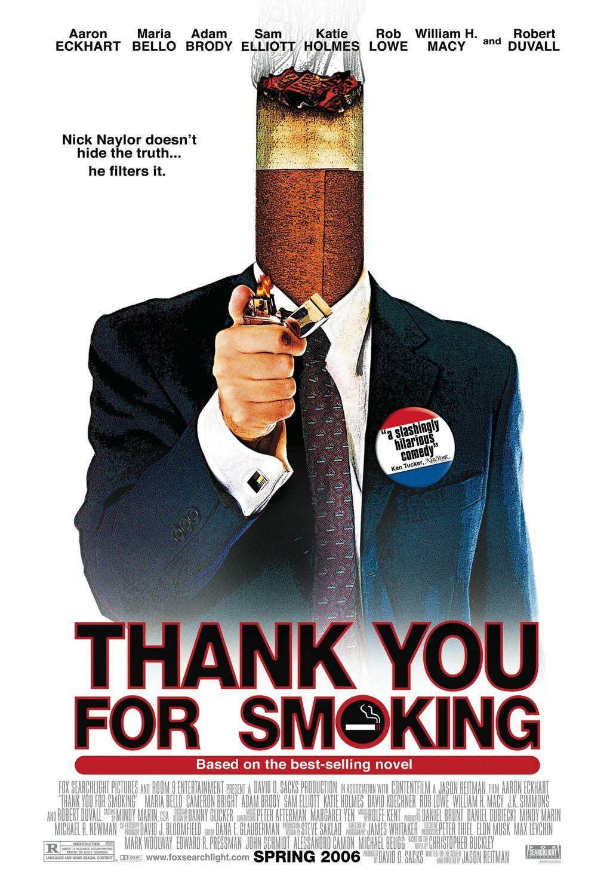

33:26 · 12 OPERE
Edward Bernays, Propaganda.
Il filo del discorso
La lettura di Propaganda di Edward Bernays diventa una discussione sulle condizioni della libertà di pensiero. Dr Divago collega la psicologia delle folle, la pubblicità e il consumo alla formazione di comportamenti standardizzati. Riprende alcuni passi sul governo invisibile, sul prestigio dei personaggi pubblici e sulla costruzione di bisogni commerciali, alternandoli a giudizi personali sulla scuola e sulla società occidentale. Il discorso di Solženicyn a Harvard e la vicenda di Mandel’štam introducono il confronto fra repressione politica e conformismo culturale: il relatore distingue la violenza delle dittature, ma giudica insufficiente una libertà che non produca autonomia interiore. Questa diagnosi rimane una sua interpretazione, senza equivalenza accertata fra sistemi politici. La parte finale torna ai meccanismi della persuasione attraverso gli esempi del pianoforte e degli appartamenti arredati, aggiunge richiami alla televisione e al cinema e si chiude con Pasolini e Thomas Mann. La scheda distingue le pagine effettivamente riconoscibili nei libri dagli aforismi non localizzati e corregge date e parentele senza attribuire al relatore formulazioni che la fonte automatica non consente di certificare.
I libri nel discorso

Propaganda
Copertina: Apogeo · Saggi, marzo 2026 · traduzione e redazione Aldo Ballerini
Copertina autentica dell’edizione Apogeo del marzo 2026, successiva alla registrazione del video: è un riferimento bibliografico attuale, non l’esemplare citato nel filmato. Titolo originale dell’opera Propaganda, 1928.
Edward Bernays, Propaganda, titolo esplicito; passi riconoscibili nei capitoli I, II e IV.
Passaggio 0:00 ↗ · Fonti e libro ↗
Propagandes
Identificazione probabile
Copertina: Economica · Classiques des sciences sociales · ISBN 9782717818482
Immagine autentica dell’opera, controllata visivamente; l’edizione di riferimento non è attribuita al filmato.
Jacques Ellul, studio sulla propaganda: identificazione di Propagandes dal contesto, senza titolo pronunciato in modo distinto.
Passaggio 1:40 ↗ · Fonti e libro ↗
La psicologia delle folle (Psychologie des foules)
Copertina: Santelli, Demos, 2023, 164 pagine, ISBN 9788892929050. L’editore indica il 13 ottobre, mentre alcuni cataloghi librari indicano il 6 ottobre. Copertina ufficiale blu con figure stilizzate bianche e rosse, titolo e autore; immagine della nuova veste editoriale ospitata nel 2025. Opera originale francese del 1895. Questa copertina è successiva alla vicenda del 2020 e non è attribuita al video.
Copertina intera dell’edizione di riferimento, identificata sulla pagina dell’editore. La descrizione promozionale dell’editore sul rapporto fra Le Bon e i dittatori non viene assunta come dimostrazione di ogni influenza storica.
Gustave Le Bon, Psicologia delle folle, titolo riconoscibile; prima edizione francese 1895.
Passaggio 3:30 ↗ · Fonti e libro ↗
I persuasori occulti
Copertina: Einaudi · ET Saggi · 2015 · traduzione di Carlo Fruttero
Immagine autentica dell’opera, controllata visivamente; l’edizione di riferimento non è attribuita al filmato.
Vance Packard, I persuasori occulti / The Hidden Persuaders, titolo esplicito.
Passaggio 4:00 ↗ · Fonti e libro ↗
Il cruccio del padre di famiglia (Die Sorge des Hausvaters)
Identificazione probabile
Copertina della raccolta Il messaggio dell’imperatore: Adelphi · Il messaggio dell’imperatore, Piccola Biblioteca 113-114, 1981 · traduzione Anita Rho
Copertina autentica della raccolta Adelphi che comprende Il cruccio del padre di famiglia, come conferma l’indice ufficiale. Il racconto e il personaggio Odradek non sono presentati come un libro autonomo; l’edizione di riferimento non è attribuita al filmato.
Odradek, figura del racconto di Kafka Il cruccio del padre di famiglia; titolo non pronunciato.
Passaggio 8:34 ↗ · Fonti e libro ↗
A World Split Apart (Discorso di Harvard)
Identificazione probabile
Copertina: Harper & Row · edizione bilingue russo e inglese · 1978
Immagine autentica dell’opera, controllata visivamente; l’edizione di riferimento non è attribuita al filmato.
Discorso di Solženicyn a Harvard, riconoscibile come A World Split Apart, 8 giugno 1978; titolo non pronunciato.
Passaggio 11:29 ↗ · Fonti e libro ↗
Arcipelago Gulag
Copertina: Mondadori · Arcipelago Gulag · edizione di riferimento
Immagine associata all’ISBN di riferimento e controllata visivamente; edizione e traduzione non identificate come quelle citate o lette nel video.
Arcipelago Gulag, richiamo esplicito all’opera.
Passaggio 12:43 ↗ · Fonti e libro ↗
Epigramma a Stalin (The Stalin Epigram)
Identificazione probabile
Copertina dell’antologia che comprende l’epigramma: W. W. Norton · Against Forgetting. Twentieth-Century Poetry of Witness · a cura di Carolyn Forché · 1993
Copertina autentica dell’antologia di più autori curata da Carolyn Forché, W. W. Norton. L’Academy of American Poets riscontra la presenza dell’epigramma in traduzione di Clarence Brown e W. S. Merwin. Non è la copertina di un libro scritto per intero da Mandel’štam né un’edizione citata nel filmato.
Poesia satirica di Mandel’štam contro Stalin: identificazione contestuale dell’epigramma del 1933.
Passaggio 21:25 ↗ · Fonti e libro ↗
The Empty Campus
Copertina: Lulu · edizione inglese di riferimento
Immagine associata all’ISBN di riferimento e controllata visivamente; edizione e traduzione non identificate come quelle citate o lette nel video.
The Empty Campus, titolo esplicito del volume del relatore.
Passaggio 23:37 ↗ · Fonti e libro ↗
Thank You for Smoking
Identificazione probabile
Locandina del film: LOCANDINA DEL FILM distribuito nel 2006, con Aaron Eckhart nel ruolo di Nick Naylor, scritto e diretto da Jason Reitman. Manifesto ufficiale Searchlight: fondo bianco, figura con una sigaretta al posto della testa, titolo e crediti completi, indicazione Spring 2006. Materiale promozionale cinematografico, non copertina del romanzo di Buckley.
Locandina ufficiale del film, identificato come probabile dal contesto e dal titolo deformato nell’ASR. Non è una copertina libraria.
Film sul tabacco e il cinema: titolo ASR deformato; probabile Thank You for Smoking di Jason Reitman.
Passaggio 30:21 ↗ · Fonti e libro ↗Lettere luterane
Copertina: Garzanti, nuova edizione 2015, presentazione di Guido Crainz, 225 pagine, ISBN 9788811688730. Copertina bianca con titolo rosso e fotografia di Pasolini al finestrino di un’automobile. Prima edizione della raccolta: Einaudi 1976, postuma. La frase richiamata appartiene a I giovani infelici, scritto all’inizio del 1975; non si attribuisce al filmato questa specifica edizione Garzanti.
Immagine autentica dell’opera, controllata visivamente; l’edizione di riferimento non è attribuita al filmato.
Pasolini, Lettere luterane; frase sulla stereotipia riconoscibile nel testo I giovani infelici.
Passaggio 31:52 ↗ · Fonti e libro ↗La montagna magica
Copertina: Mondadori · Oscar Moderni Cult · 2026
Copertina autentica controllata visivamente. Edizione di riferimento; non identifica l’esemplare usato o citato nel video.
Thomas Mann, La montagna magica; titolo esplicito, passo preciso non localizzato.
Passaggio 32:36 ↗ · Fonti e libro ↗